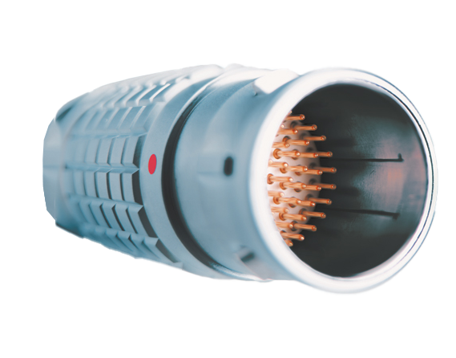
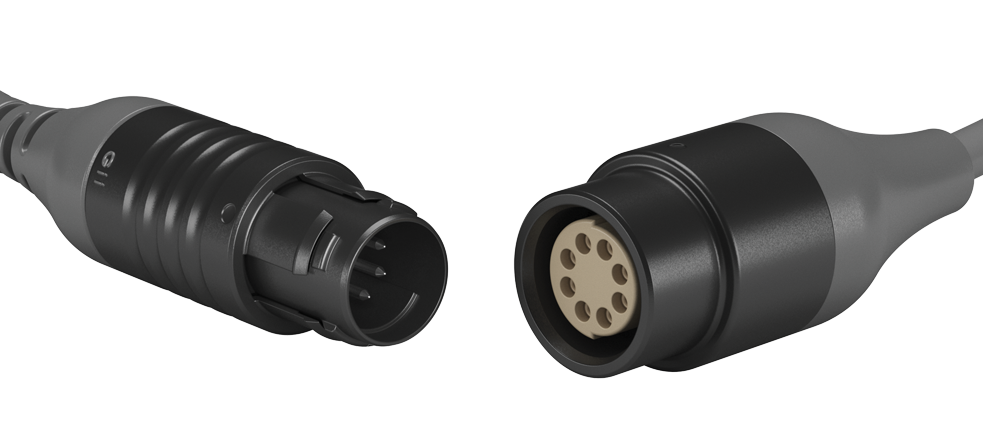

Energy-Based Medical Devices
Electrosurgical devices, RF ablation systems, and laser delivery systems demand connectors that handle high voltages safely and reliably. Our team specializes in:
- High-voltage connector design with robust insulation
- Shielding architecture to prevent EMI/RFI interference
- Locking and breakaway mechanisms for surgeon safety
- Single-use and reusable connector configurations
- Thermal management in high-power applications

Diagnostic & Imaging Devices
Scopes, probes, catheters, and ultrasound transducers require connectors that preserve signal integrity at high frequencies. We deliver:
- High-frequency signal integrity design in cable assemblies
- Miniaturized connectors for minimally invasive applications
- Low-noise signal transmission to preserve imaging fidelity
- Biocompatible materials for patient contact surfaces
- Sterilization-rated designs for reusable instruments

Push-Pull Connector Technology
LEMO and Fischer-style push-pull connectors are industry standards for medical devices. Our expertise includes:
- Deep technical knowledge of LEMO and Fischer connector ecosystems
- Purpose-built alternatives with full backward compatibility
- Non-locking, locking, and breakaway configurations
- 1 to 30+ contact position designs with miniaturization options
- Custom insert arrangements for specialized applications

Single-Use vs. Reusable Device Design
The choice between single-use and reusable designs shapes your entire manufacturing and engineering strategy. We guide you through:
- Cost and regulatory implications of each approach
- Single-use design: minimal parts, biocompatible materials, reliable one-time connection
- Reusable design: sterilization-rated materials, robust cycling life, cleaning validation
- Supply chain and inventory management considerations
- Patient safety and clinical workflow optimization

Custom Connector Engineering
When off-the-shelf connectors don't exist, our engineering team designs them from scratch. This includes:
- Requirements analysis and preliminary design
- DFM (Design for Manufacture) analysis to optimize cost and producibility
- Rapid prototyping and iterative validation
- Backward compatibility with industry-standard systems
- Prototype to volume production scaling

Manufacturing Transfer Expertise
Transferring production from an OEM's internal facility or another CMO requires careful engineering oversight. We provide:
- Detailed engineering review of existing processes and designs
- Process revalidation and capability studies
- Supply chain mapping and vendor qualification
- Regulatory documentation support (DHR, DHF, change control)
- First-article inspection and lot acceptance procedures
- Seamless knowledge transfer to ensure continuity